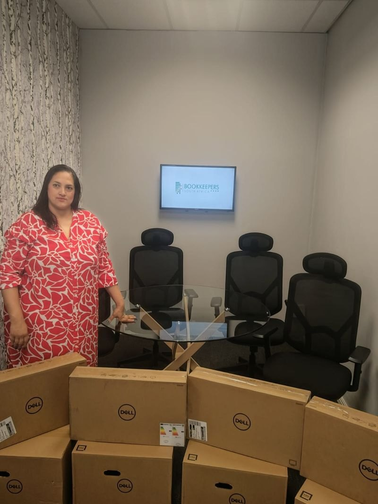
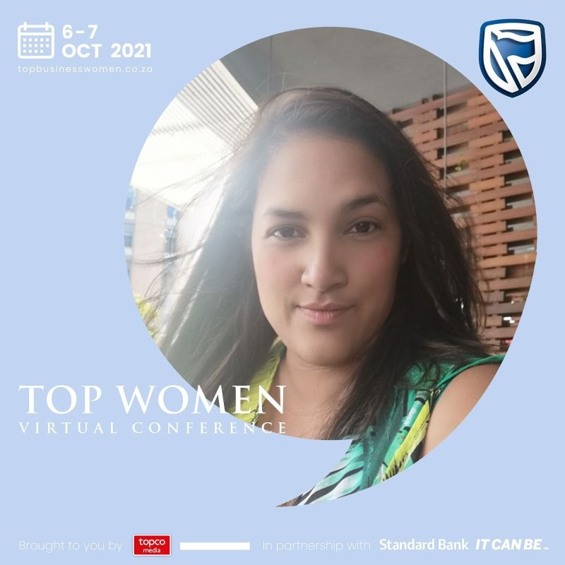
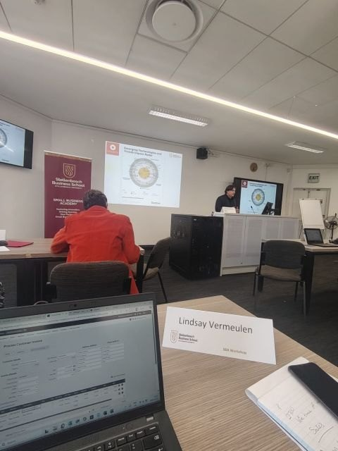
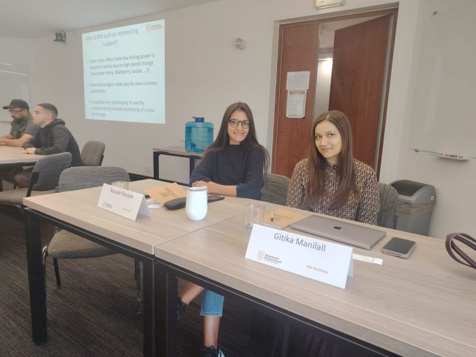
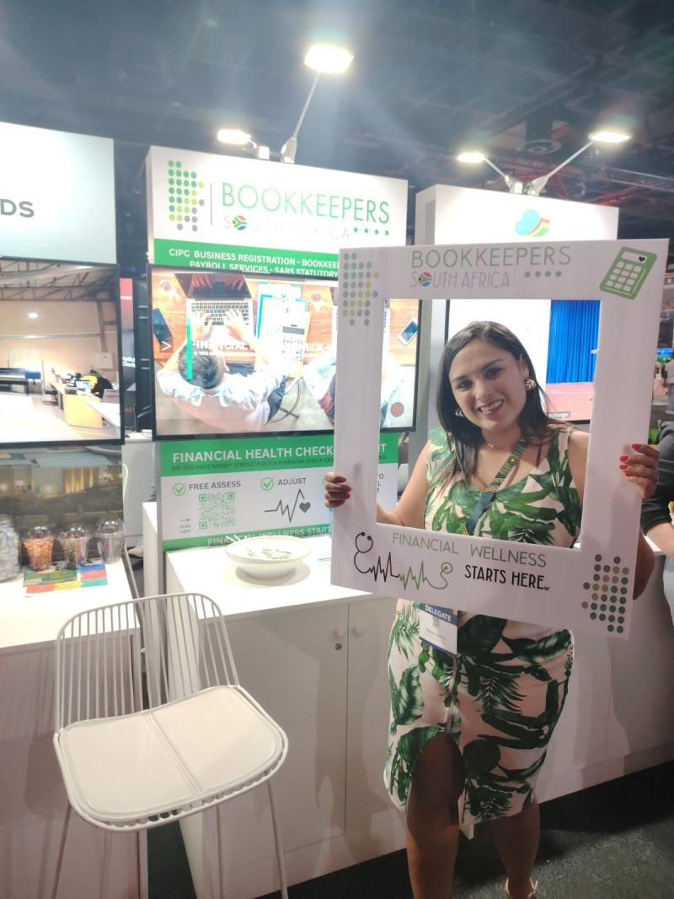

Lindsay Vermeulen founded Bookkeepers South Africa ten years ago with a laptop and a handful of clients. A decade on, that's grown into offices in Cape Town and Johannesburg — built the same way it started: one business's numbers at a time.

Lindsay started Bookkeepers South Africa in Cape Town, built on a simple idea — small business owners shouldn't have to guess where their business stands financially. That focus on clean records, payroll that runs on time and tax submissions handled properly is still what the practice is built around today.
As the client base grew into Gauteng, Lindsay opened a second office in Johannesburg, creating four new positions in the process — so clients in both cities get the same standard of work from people who actually understand how their business operates.
She's also a registered Commissioner of Oaths, able to certify documents and administer affidavits for clients directly, without an extra trip to find one elsewhere.
“Ten years ago, our bookkeeping practice began with nothing more than a laptop, a handful of clients, and a drive to help small businesses make sense of their numbers. It's been a journey filled with challenges and triumphs — late nights, constant changes in tax laws, and the privilege of walking alongside entrepreneurs who pour their hearts into their businesses.
This year marks a special chapter in our story: the expansion into Johannesburg and the creation of four new positions in our team. Growth like this doesn't happen overnight — it's built on resilience, consistency, and the trust of clients who believe in us.
Here's to ten years behind us, expansion ahead, and to every small business owner who keeps showing up every day.”
Lindsay Vermeulen Founder, Bookkeepers South Africa
Lindsay stays close to the small business community she works in — learning, recognised, and on the ground.

Featured as part of Standard Bank's Top Women Virtual Conference, recognising South Africa's leading businesswomen.

Lindsay regularly attends professional development workshops — including at the Stellenbosch Business School Small Business Academy — to keep sharpening the advice she gives clients.

As the practice has grown, so has the investment in the people doing the work — bringing the team along to the same training and development Lindsay pursues herself.

At the South African Future Trust Summit in Sandton, the team ran free financial health checks for business owners — because financial confidence starts with understanding your numbers.